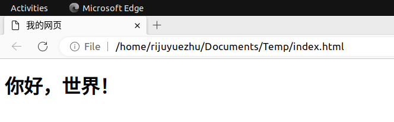
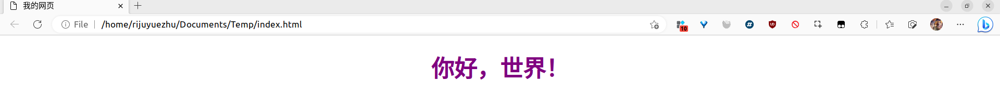
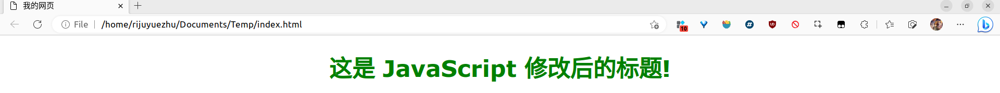

下面先给几个例子:
在 VS Code 里打开一个工作区. 新建一个 index.html, 输入以下内容.
<!DOCTYPE html>
<html lang="zh-CN">
<head>
<title>我的网页</title>
<meta charset="UTF-8">
</head>
<body>
<h1>你好，世界！</h1>
</body>
</html>
效果如下:

具体的细节后面再说.
我们来试试加入 CSS 来改变一下样式.
在之前的 index.html 中加入一行, 成为
<!DOCTYPE html>
<html lang="zh-CN">
<head>
<title>我的网页</title>
<meta charset="UTF-8">
<link rel="stylesheet" href="style.css">
</head>
<body>
<h1>你好，世界！</h1>
</body>
</html>
并且, 在同级目录新建一个文件 style.css(和上面的 href="style.css" 相对应), 写:
h1 {
color: purple;
font-size: 44px;
text-align: center;
}
刷新页面, 现在的效果为

文字是居中的, 且文字大小和文字颜色发生了变化.
再来试试加入一些 Javascript 吧!
修改 index.html 如下:
<!DOCTYPE html>
<html lang="zh-CN">
<head>
<title>我的网页</title>
<meta charset="UTF-8">
<link rel="stylesheet" href="style.css">
</head>
<body>
<h1 id="firstTitle">你好，世界！</h1>
</body>
<script src="script.js"></script>
</html>
然后, 再在同级目录下添加一个 script.js, 输入
title = document.getElementById("firstTitle");
title.innerHTML = "这是 JavaScript 修改后的标题!";
title.style.color = "green";
效果为:

if, for, 按钮等元素进行控制. 后面再说.<!DOCTYPE html>
<html lang="zh-CN">
<head>
<title>我的网页</title>
<meta charset="UTF-8">
<link rel="stylesheet" href="style.css">
</head>
<body>
<!-- contents -->
</body>
</html>
<name> 和 </name> 开闭的形式, 类似于 C 语言的 { 和 }.<meta>, <link>, 还有后面会说到的 <img> 等, 那么它们一般不会有闭合标签.<!-- XXX -->. 注释的内容不会被浏览器渲染.<html> 代表整个页面, 然后在 <html> 里有 <head> 和 <body> 两个标签, 分别表示标题部分和主要页面部分.<p>contents</p> 段落, 段落结尾换行.<h1>title</h1> 标题, 可以用 <h1> <h2> 一直到 <h6>, 大小从大到小.<a href="your-link">contents</a> 超链接, 可以连接页内, 也可以连接页外.<div>contents</div> 万能块状标签, 用来划分页面元素, 方便加 CSS 和 JavaScript.<br> 换行.<hr> 分割线.<b>contents</b> 加粗.<img src="path" alt="desc">插入图片, 其中路径为 path, 描述为 desc.<button type="button" onclick="js-code"></button> 按钮, 按下后执行 onclick 后面的 JavaScript 代码.title 部分加入一句<link rel="stylesheet" href="style.css"/>
其中 href 后是 CSS 样式文件的目录.
就可以应用这个文件中的 CSS 样式了.
所有的 CSS 采用形如
name {
attribute1: value1;
attribute2: value2;
/* ... */
}
的形式进行格式设置. 其中:
name 是标签名或 class 名或 id 名.attribute 是属性.value 是值./* Contents */ 是注释(类似 C 的).比如, 我们要对所有的 <p> 和 <li> 进行格式设置, 设置为红色, 行高设置为 1.5 倍, 字号设为 24px. 那么我可以写
p, li {
color: red;
line-height: 1.5;
font-size: 24px;
}
这样， 所有在 HTML 中写的 <p> 和 <li> 都会应用这种格式.
CSS 中有很多属性可以更改, 而且很多属性有注意事项. 在应用属性前, 可以查一查 MDN 或者菜鸟教程了解更多.
有些时候我们不想让某种标签的全部元素应用相同的格式, 比如让某一个 <p>标签有以上的格式, 那么可以使用 HTML 的 class 或 id 功能.
在 HTML 中我们这样写 <p> 标签:
<p class="className">content1</p>
<p id="idName">content2</p>
这里有两种写法, 我们可以对 class 名或 id 名进行 CSS 样式设置为:
.className {
/* 内容略, 注意 className 前的 . */
}
#idName {
/* 内容略, 注意idName 前的 # */
}
<p class="class1 class2 class3">contents</p>
思考题: 如果一个元素, 它的标签进行了格式设置, 有多个 class 且也进行了格式设计, 同时也有一个 id 进行了格式设计(虽然最好不要这样). 如果它们的格式有冲突, 哪个的优先级最高?
for, if, while, switch 等。const node = document.getElementById("idName");
返回一个 idName 对应的 HTML 元素的索引.
const nodeArray = document.getElementsByClassName("className");
返回一个 className 对应的 HTML 元素组成的 HTML Collection, 可以用 for 循环遍历:
for(let i = 0; i < nodeArray.length; i++) {
// Do something on nodeArray[i]
}
document.getElementById("idName").innerHTML= "newHTML";
src)document.getElementById("pic").src = "newPath";
document.getElementById("para").style.color = "newColor";
<button type="button" onclick="js-code">Name</button>
可以把 onclick 后面的 js-code 改为一串 javaScript 代码, 一般是某个函数的入口
有个样式属性叫做 display.
document.getElementById("divName").style.display = "none";
// 隐藏
document.getElementById("divName").style.display = "block";
// 显示
那就开始做吧! 可以找个网页抄抄.
请自行搜索, 将自己的代码库用 git 上传到某个 GitHub 仓库去.
来我们的 GitHub 仓库逛一逛吧! (求个 Star 😀)